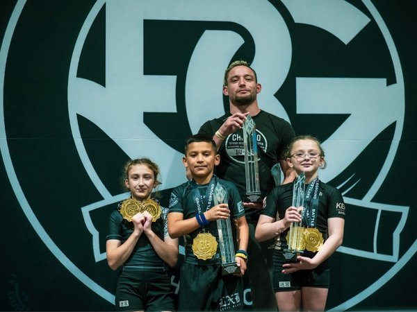

10 Benefits of Brazilian Jiu-Jitsu for Kids
From building unshakable confidence to learning practical self-defense, discover the top reasons parents across Fulshear and Katy are choosing BJJ for their children.
Read Article →Expert insights on Brazilian Jiu-Jitsu for kids and families — from the #1 ranked academy in Texas.

From building unshakable confidence to learning practical self-defense, discover the top reasons parents across Fulshear and Katy are choosing BJJ for their children.
Read Article →Wondering if your 3-year-old is ready — or if your teen missed the window? Here's an honest, age-by-age breakdown from our head instructor.
Read →Two of the most popular martial arts for children, compared head-to-head. We break down self-defense, fitness, safety, and real-world effectiveness.
Read →Nervous about your first visit? Here's a step-by-step walkthrough of what happens when you walk into Labyrinth BJJ — for kids and adults alike.
Read →Discover the specific ways training on the mats translates to better focus, stronger self-belief, and lasting discipline at school and home.
Read →How Labyrinth BJJ became the #1 ranked academy in Texas — nationally verified stats, 3 black belt instructors, and facilities that match the instruction.
Read →Everything you need to know about Labyrinth BJJ's Katy location — programs for ages 3–15, Coach Jared Vevera, and why BJJ beats traditional martial arts studios.
Read →Self-defense, fitness without a treadmill, real confidence, and community — why Brazilian Jiu-Jitsu is the fastest-growing martial art among women.
Read →From choosing your first event to what to pack in your bag — a complete guide to competition preparation for BJJ beginners.
Read →Instructor credentials, cleanliness, culture, trial classes, and the red flags that should send you somewhere else. A no-nonsense guide.
Read →The complete guide to adult and kids belt progression — what each rank means, how stripes work, and how long it takes to earn your black belt.
Read →How BJJ's structure, sensory input, and engagement help ADHD kids focus, self-regulate, and thrive — from a coach who sees it work every week.
Read →